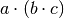
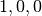
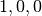
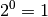
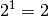
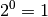
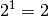

This is an introduction to group theoretical concepts for symmetry in Mantid. It is the basis for further descriptions covering point groups and space groups.
Symmetry in space of any dimensionality can be described by symmetry groups. This and the following guides cover symmetry in three dimensions, as it is most commonly used in crystallography and how it is integrated into Mantid. All code samples are given as Python code and can be executed directly in the program.
A group  is defined as a set of elements
is defined as a set of elements  with a binary operation
with a binary operation  which combines two elements of . is a group if the four group axioms are satisfied [Groups]:
which combines two elements of . is a group if the four group axioms are satisfied [Groups]:
- Closure: For all
in
is also in
- Associativity: For all
is equal to .
- Identity element: There exists an element
in
.
- Inverse element: For each
in
in
There are many examples for groups, for example the group defined by the set of signed integer numbers and the addition operation. Any two integers added result again in an integer, integer addition is associative, there is an identity element (the number 0) and for each integer there is an inverse element (the number with the same magnitude, but opposite sign). For describing symmetry, groups are required that consist of a set of symmetry operations and a binary operation that combines them. The next section describes how symmetry operations can be represented and how to work with them in Mantid.
As symmetry operations are used for the definition of space groups, the mathematics behind this are covered in depth in the International Tables for Crystallography A (ITA), namely part 11 [ITASymmetry]. A symmetry operation describes the transformation of an object  into its image
into its image  :
:

For a coordinate  in three dimensions, any transformation can be described using a transformation matrix
in three dimensions, any transformation can be described using a transformation matrix  and a translation vector
and a translation vector  . This leads to the following equation:
. This leads to the following equation:

is a  -matrix and for affine transformations, the determinant of the matrix is always equal to 1 or -1 (except for hexagonal coordinates, which are handled transparently in Mantid so this is not covered here).
-matrix and for affine transformations, the determinant of the matrix is always equal to 1 or -1 (except for hexagonal coordinates, which are handled transparently in Mantid so this is not covered here).
Coordinates  are assumed to be fractional in terms of a unit cell, which defines the smallest unit of an infinite lattice that is repeated over and over.
are assumed to be fractional in terms of a unit cell, which defines the smallest unit of an infinite lattice that is repeated over and over.
Of course it is also possible to transform vectors (such as reciprocal vectors  described by Miller indices h, k and l), in which case the translation does not apply and the matrix needs to be inverted and transposed:
described by Miller indices h, k and l), in which case the translation does not apply and the matrix needs to be inverted and transposed:

For the definition of the group this means that is a set of matrix and vector pairs  . All that’s missing for completing the description of a symmetry group is the definition of the binary operation :
. All that’s missing for completing the description of a symmetry group is the definition of the binary operation :
![S_3 = S_1 \cdot S_2 = \left(\mathbf{W}_1 \cdot \mathbf{W}_2, \left[\mathbf{W}_1 \cdot \mathbf{w}_2\right] + \mathbf{w}_1\right)](../_images/math/96b6e7fc30f8b698e6a0f5bd9bf768ae320c06e0.png)
While matrix and vector pairs are very well suited for modelling symmetry operaitions in a computer language, they are not very convenient for human language. A very common notation is the “Jones-faithful” system, which is for example used in the symmetry operations section in the space group descriptions in ITA. It uses  triplets to describe the rows of the matrix ( meaning  and so on) and the translation vector (for example
triplets to describe the rows of the matrix ( meaning  and so on) and the translation vector (for example  for a translation of half a unit cell vector in
for a translation of half a unit cell vector in  -direction). The following table shows some more examples:
-direction). The following table shows some more examples:
| Symbol | Symmetry operation |
|---|---|
| x,y,z | Identity |
| -x,-y,-z | Inversion |
| -x,-y,z | 2-fold rotation around  |
| x,y,-z | Mirror plane perpendicular to |
| -x,-y,z+1/2 |  screw axis along screw axis along |
There are several advantages to this notation. First of all it’s very concise and secondly it directly shows how a point behaves under the symmetry transformation. As such this notation was chosen for generation of symmetry operations in Mantid.
Last but not least, each symmetry operation has a so called order  , which describes how many times the operation has to be chained together to arrive at identity:
, which describes how many times the operation has to be chained together to arrive at identity:

The same is true for transforming coordinates as well. Applying a symmetry operation of order exactly times to a point will result in again, which is the definition of identity.
Symmetry operations are implemented in Mantid following the scheme described above with matrix and vector pairs, it is written in C++ and resides in the Geometry library. How to use this code is described in the doxygen documentation and shall not be covered at this point. Instead this section describes how symmetry operations can be used in the Python environment of Mantid.
As described above, the operations are represented using the Jones-faithful notation, so they can be created by a factory that parses these strings. It returns a SymmetryOperation-object which can be queried for certain characteristics. The most obvious one is the identifier string. It may differ from the one used to create the operation, because the strings are normalized internally so that a specific matrix and vector pair always has the same identifier.
from mantid.geometry import SymmetryOperationFactory
# This time the identifier is already normalized
symOp = SymmetryOperationFactory.createSymOp("x,y,-z")
print symOp.getIdentifier()
# This is an example for an identifier that changes
symOp = SymmetryOperationFactory.createSymOp("1/2+x,y,z")
print symOp.getIdentifier()
Executing the above code yields the following output, which shows how the operation identifier is modified in some cases:
x,y,-z
x+1/2,y,z
For ease of use with multiple symmetry operations it’s also possible to create multiple operations at once, using a semi-colon separated string of identifiers:
from mantid.geometry import SymmetryOperationFactory
# Create a list of symmetry operations
symOps = SymmetryOperationFactory.createSymOps("x,y,-z; -x,-y,-z; z,x,y")
print "Number of operations:", len(symOps)
print "Operations:"
for op in symOps:
print op.getIdentifier()
This prints each identifier on a new line:
Number of operations: 3
Operations:
x,y,-z
-x,-y,-z
z,x,y
Symmetry operation objects can be used to transform coordinates or Miller indices, which are handled differently as detailed in the theory section above, so different methods exists for each of the two tasks.
from mantid.geometry import SymmetryOperationFactory
symOp = SymmetryOperationFactory.createSymOp("x-y,x,z")
coordinates = [0.3, 0.4, 0.5]
coordinatesPrime = symOp.transformCoordinates(coordinates)
print "Transformed coordinates:", coordinatesPrime
This script generates a symmetry operation that is used in hexagonal coordinate systems and uses it to transform the given coordinates:
Transformed coordinates: [-0.1,0.3,0.5]
As transforming HKLs requires slightly different math, there is a special method for this as well:
from mantid.geometry import SymmetryOperationFactory
symOp = SymmetryOperationFactory.createSymOp("x,y,-z")
hkl = [1, -1, 3]
hklPrime = symOp.transformHKL(hkl)
print "Transformed hkl:", hklPrime
The above code will print the transformed Miller index triplet:
Transformed hkl: [1,-1,-3]
It’s also possible to query the order of a symmetry operation. The next example generates a fourfold rotation around the -axis and prints some information about it.
from mantid.geometry import SymmetryOperationFactory
symOp = SymmetryOperationFactory.createSymOp("-y,x,z")
k = symOp.getOrder()
print "Order of the symmetry operation:", k
x = [0.3, 0.4, 0.5]
print "Original point: ["+(','.join(" %.1f"%c for c in x)).strip()+"]"
for i in range(k):
x = symOp.transformCoordinates(x)
print "After", i + 1, "application(s):", x
Order of the symmetry operation: 4
Original point: [0.3, 0.4, 0.5]
After 1 application(s): [-0.4,0.3,0.5]
After 2 application(s): [-0.3,-0.4,0.5]
After 3 application(s): [0.4,-0.3,0.5]
After 4 application(s): [0.3,0.4,0.5]
Sometimes it’s easier to describe symmetry in terms of the symmetry element that is associated to an operation. Several notation systems exist for these elements, but Hermann-Mauguin symbols are most commonly used in crystallography. Information on how to read these symbols can be found in ITA. Except identity, inversions and translations, all symmetry elements have a characteristic axis. In case of mirror and glide planes, this axis is perpendicular to the plane.
Section 11.2 in the same book describes how to derive symmetry elements from matrix and vector pairs. The algorithms from that text are implemented in Mantid as well, so after a symmetry operation has been created using the factory, another factory can be used to generate the symmetry element corresponding to the operation. The resulting object can be queried for its Hermann-Mauguin symbol, its axis and its rotation sense (only for rotation axes). For identity, inversion and translation this returns [0, 0, 0].
from mantid.geometry import SymmetryOperationFactory, SymmetryElementFactory
symOp = SymmetryOperationFactory.createSymOp("x,y,-z")
element = SymmetryElementFactory.createSymElement(symOp)
print "The element corresponding to 'x,y,-z' has the following symbol:", element.getHMSymbol()
print "The mirror plane is perpendicular to:", element.getAxis()
print "Sense of rotation (or NoRotation):", element.getRotationSense()
In this case, it’s a mirror plane perpendicular to the -axis:
The element corresponding to 'x,y,-z' has the following symbol: m
The mirror plane is perpendicular to: [0,0,1]
Sense of rotation (or NoRotation): NoRotation
In the previous section, symmetry operations and a binary operation combining them were introduced, which is finally sufficient to define symmetry groups. For the purpose of defining groups, it is assumed that coordinates and  ,
,  ,
,  and so forth are equivalent. That means that translation vectors are limited to have it’s elements on the interval
and so forth are equivalent. That means that translation vectors are limited to have it’s elements on the interval  . The most simple group possible contains only one element, the identity:
. The most simple group possible contains only one element, the identity:

This group fulfills all four group axioms. The identity matrix multiplied with itself is again identity, so the group is closed. Associativity holds as well, since it does not matter in which order multiple identical operations are performed. Since the only element of the group is the identity, the third axiom is fulfilled as well. So is the fourth, since the inverse of the identity is again identity. This group exists as the point group  and describes objects that do not show any symmetry except identity.
and describes objects that do not show any symmetry except identity.
As more operations are added to a group, it can be useful to display the group in terms of a group table, which makes it easy to check the group axioms. The following example group contains the symmetry operations ,  ,
,  and
and  , the latter two being characterized by the same axis. The cells of the group tables show the result of the binary operation combining the symmetry operations in the header row and header column:
, the latter two being characterized by the same axis. The cells of the group tables show the result of the binary operation combining the symmetry operations in the header row and header column:
|
|
|
|
|
|---|---|---|---|---|
|
|
|
|
|
|
|
|
|
|
|
|
|
|
|
|
|
|
|
|
Combining the symmetry operations does not result into any new operations, so the group is closed. Each element has an inverse (in this case, each element is its own inverse). :math:` and an identity element exists (all elements in the first row are the same as in the header row). Groups are available through the Python interface of Mantid. The following code generates the group in the table above (with the y-axis being characteristic for rotation and mirror symmetry) and checks whether this set of symmetry operations is indeed a Group:
from mantid.geometry import Group
group = Group("x,y,z; -x,-y,-z; -x,y,-z; x,-y,z")
print "Order of group:", group.getOrder()
print "Fulfills group axioms:", group.isGroup()
This code confirms what was demonstrated by the group table above, the specified set of symmetry operations fulfills the group axioms:
Order of group: 4
Fulfills group axioms: True
For more fine-grained information, the four axioms can also be checked separately. Please note that the associativity axiom is always fulfilled due to the way the binary operation for symmetry operations is defined, it’s included for completeness reasons. In the next example, the inversion operation is removed and the four axioms are checked:
from mantid.geometry import Group, GroupAxiom
group = Group("x,y,z; -x,y,-z; x,-y,z")
print "Group axioms fulfilled:"
print " 1. Closure:", group.fulfillsAxiom(GroupAxiom.Closure)
print " 2. Associativity:", group.fulfillsAxiom(GroupAxiom.Associativity)
print " 3. Identity:", group.fulfillsAxiom(GroupAxiom.Identity)
print " 4. Inversion:", group.fulfillsAxiom(GroupAxiom.Inversion)
The code reveals that axioms 2 - 4 are fulfilled, but that the group is not closed:
Group axioms fulfilled:
1. Closure: False
2. Associativity: True
3. Identity: True
4. Inversion: True
Looking into the group table above shows the reason: The combination of a mirror plane and a two-fold rotation axis implies the the presence of an inversion center. Similarly, the identity can be removed:
from mantid.geometry import Group, GroupAxiom
group = Group("-x,-y,-z; -x,y,-z; x,-y,z")
print "Group axioms fulfilled:"
print " 1. Closure:", group.fulfillsAxiom(GroupAxiom.Closure)
print " 2. Associativity:", group.fulfillsAxiom(GroupAxiom.Associativity)
print " 3. Identity:", group.fulfillsAxiom(GroupAxiom.Identity)
print " 4. Inversion:", group.fulfillsAxiom(GroupAxiom.Inversion)
In contrast to removing the inversion, the group now also lacks an identity element:
Group axioms fulfilled:
1. Closure: False
2. Associativity: True
3. Identity: False
4. Inversion: True
Using these specific checks can be helpful for finding out why a certain set of symmetry operations is not a group.
Some groups are so called cyclic groups, all elements of the group can be expressed as powers of one symmetry operation (which are explained above) from 0 to  , where k is the order of the operation. The group with elements and is an example for such a cyclic group, it can be expressed as  and .
, where k is the order of the operation. The group with elements and is an example for such a cyclic group, it can be expressed as  and .
Just like in the case of symmetry operations, it’s also possible to define a binary operation that combines two groups. For this, each symmetry operation of the first group is multiplied with each symmetry operation of the second group. If the resulting new set of operations fulfills the group axioms, the product of the two groups is again a group.
These general group concepts are available in the C++ library of Mantid and are described in the API documentation (Mantid::Geometry::SymmetryOperation, Mantid::Geometry::SymmetryElement, Mantid::Geometry::Group). The most important specializations of symmetry groups implemented in Mantid are point- and space groups. They are explained in an additional document.
| [Groups] | Wikipedia article on groups. Can be found in different formulations in various places such as Wolfram MathWorld. |
| [ITASymmetry] | International Tables for Crystallography (2006). Vol. A, part 11, p. 810 (chapters 11.1 and 11.2). |
Category: Concepts